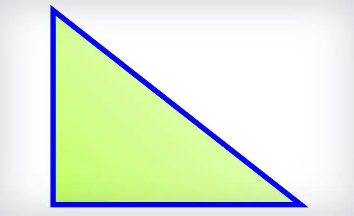
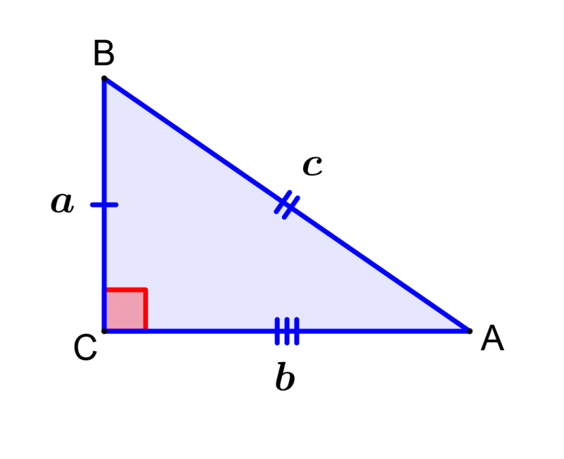
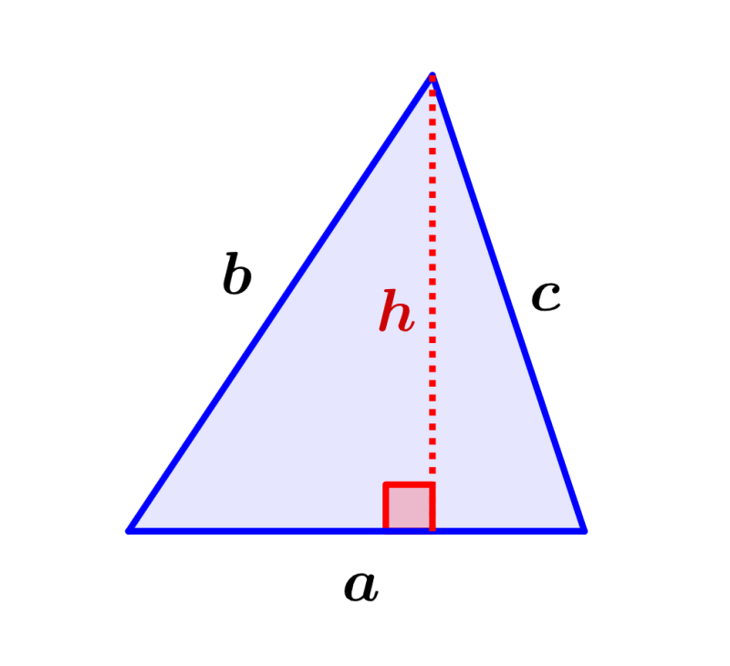
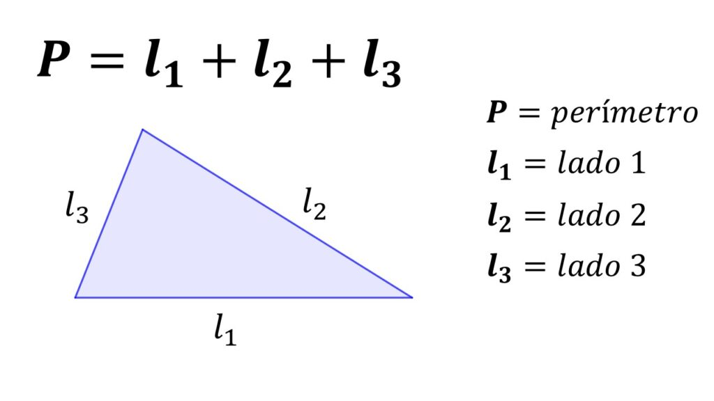
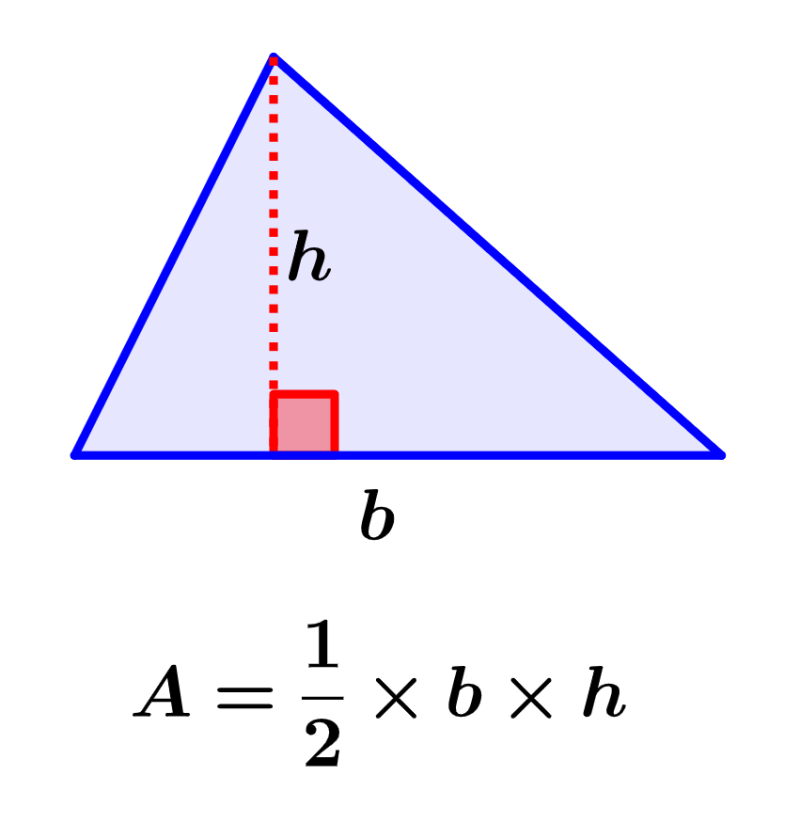

Escaleno
Un triángulo escaleno es un tipo de triángulo en el cual los tres lados tienen longitudes diferentes. Esto significa que ninguno de los lados del triángulo escaleno es igual a otro.

Características principales del triángulo escaleno:
- Lados: En un triángulo escaleno, los tres lados tienen longitudes diferentes. Llamemos "a", "b" y "c" a las longitudes de los lados. Entonces, a ≠ b ≠ c.
- Ángulos: Los ángulos internos de un triángulo escaleno también tienen medidas diferentes. Ningún par de ángulos internos es congruente.

- Base: No hay una base específica en un triángulo escaleno, ya que todos los lados tienen longitudes diferentes.
- Altura: La altura de un triángulo escaleno es la línea perpendicular trazada desde uno de los vértices hasta el lado opuesto (o la extensión del lado opuesto). Las alturas de un triángulo escaleno pueden tener longitudes diferentes.

- Perímetro: El perímetro de un triángulo escaleno se obtiene sumando las longitudes de los tres lados. Es decir, el perímetro es igual a la suma de a + b + c.

- Área: El área de un triángulo escaleno se puede calcular utilizando la fórmula de Herón o la fórmula general de triángulos. La fórmula de Herón utiliza las longitudes de los lados para calcular el área, mientras que la fórmula general de triángulos utiliza las coordenadas de los vértices del triángulo.

Los triángulos escalenos son versátiles y pueden encontrarse en diversas situaciones y aplicaciones matemáticas y prácticas. Debido a la variedad en las longitudes de los lados y los ángulos, los triángulos escalenos pueden presentar diferentes configuraciones y propiedades geométricas.